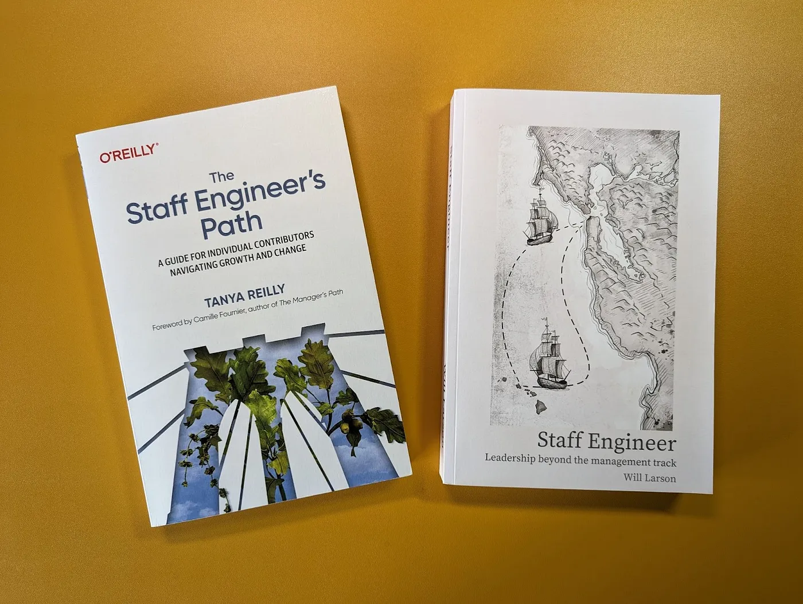
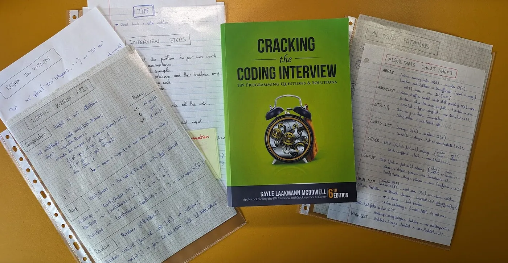
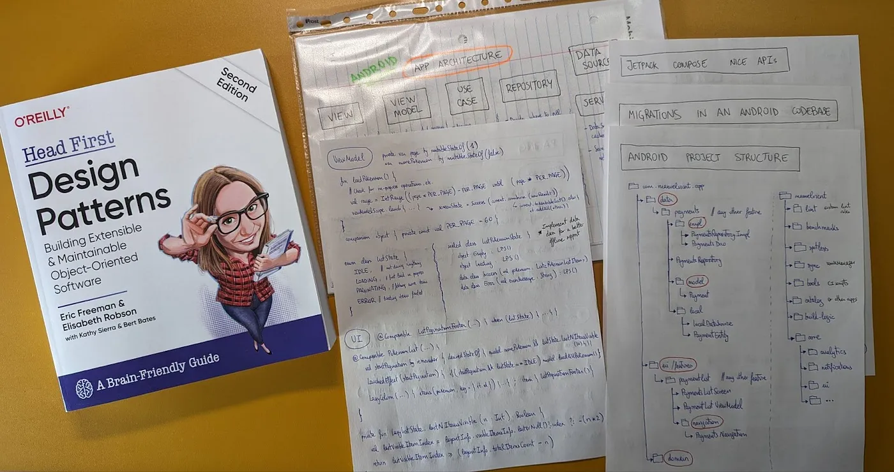
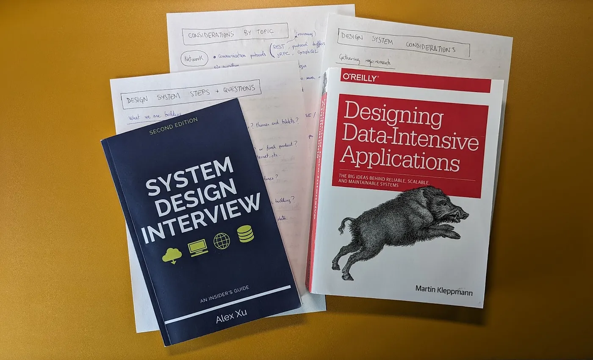
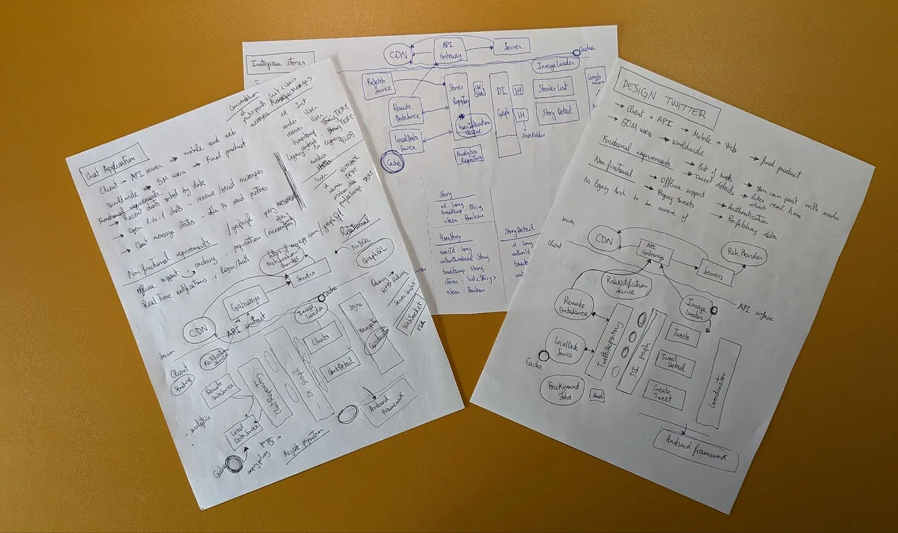
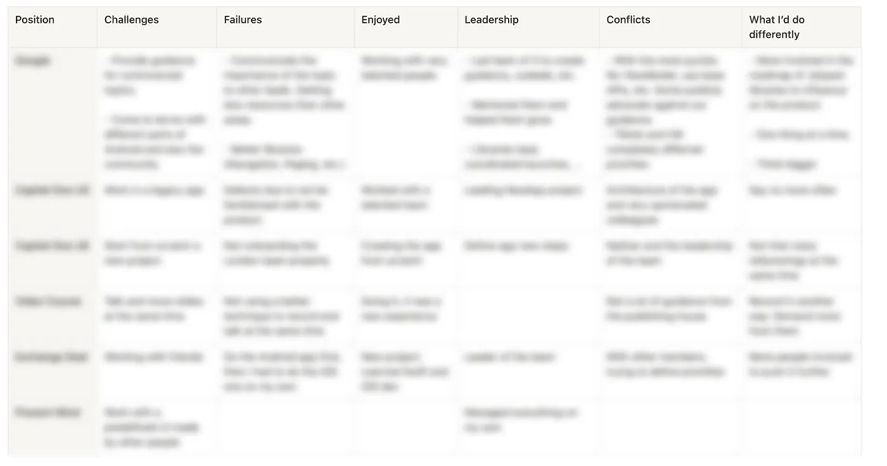
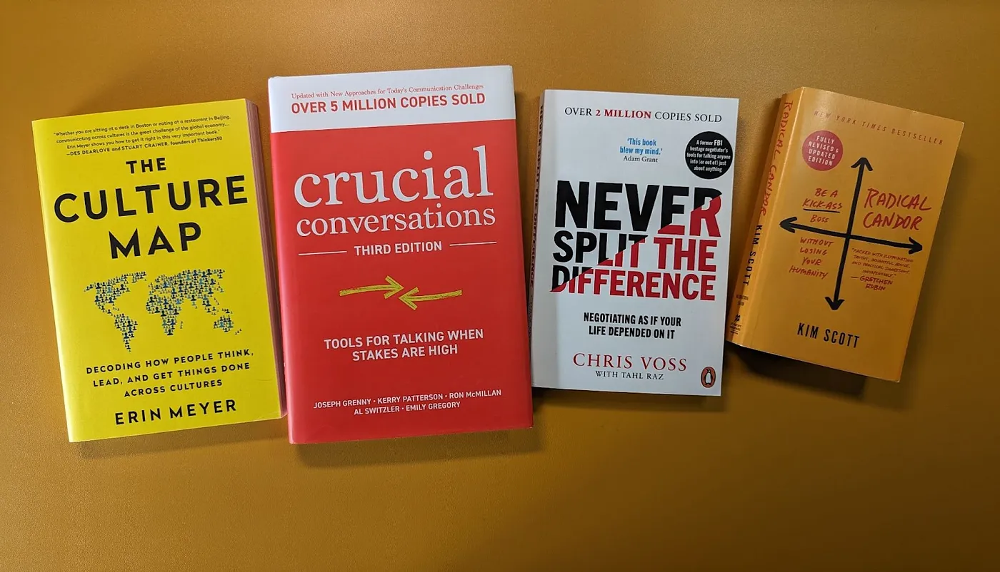

Interviewing at Staff+ level
In this blog post, I’m covering how I prepared for various Staff level interviews at different companies
Interviewing for Staff+ Individual Contributor (IC) level positions can be both challenging and exhilarating. As you aspire to get hired in these positions, you may find yourself grappling with uncertainties about your adaptability to new company cultures, tech stacks, and business domains. So… how should you prepare to excel at these interviews?
In this blog post, I’m covering how I prepared for various Staff level interviews at different companies. Given the versatile skill set a Staff+ position requires, each company might have their unique interview processes. You need to be flexible and ready for any type of interview. Staff+ positions are scarce, and there’s a fair bit of competition. Making the company wait in order to prepare for their different interviews might mean losing out to someone who was ready to impress from day one.
Note: It’s perfectly okay if you’re unfamiliar with Staff+ positions if you’ve recently begun your career as an IC, or if you’re simply curious about what it takes to get there. This blog post is relevant for you too 😊 Keep reading! Companies may also conduct these types of interviews at other levels.
I have experience interviewing at FAANG, as well as large and medium-sized tech companies, but I won’t divulge specifics about the companies I interviewed with or the intricacies of their processes, as these can evolve rapidly. Interviewers will tell you everything you need to know at the right time. Instead, I’ll give you insights into the most common interview types: 1) Data Structures and Algorithms (DS/A), 2) area of expertise (Android in my case), 3) system design, and 4) behavioural interviews.
But in case you’re wondering… Yes, I did! I passed multiple interview processes and joined Bumble Inc. 🐝 as a Staff Android Engineer. In the upcoming sections, I’m explaining how to prepare for those 4 types of interviews, and some tips to help you nail them.
Are you ready to be a Staff+ engineer?
You, better than anyone, know if you’re ready to be a Staff+ engineer or if it’s a goal you’re aspiring towards. This journey to this level involves not just technical skills but also a keen understanding of leadership and impact. I wouldn’t be giving justice to the topic if I tried to give you advice in a couple of paragraphs. For that, I’m relying on amazing authors who wrote entire books about the topic.
My favourite book to understand what the role is about is The Staff’s Engineer’s Path by Tanya Reilly. This is an authentic masterpiece. Another book you might find interesting is Staff Engineer by Will Larson.
 Picture of the Staff Engineer books
In a nutshell, a Staff+ IC engineer typically operates at a senior level within a company. They may have extensive technical knowledge on a particular area and often take leadership roles. They’re responsible for driving technical excellence, providing mentorship, and contributing to high-level decision-making.
Preparing the DS/A interview
The Data Structures and Algorithms interview is probably the most controversial one — some love it, while others hate it! I can understand why some companies choose to conduct this kind of interviews:
- They help refine your coding skills. You are able to translate thoughts into functional code.
- A simple question can be built upon to see how the candidate reasons about, collaborates, and incorporates feedback from the interviewer.
- They force you to think about a problem in a structural way.
Those 3 points are crucial to succeed in a DS/A interview. Let’s go one by one.
Improving your coding skills
Apart from learning the different types of exercises you can face, you need to solve the problem presented to you. Getting to a working solution is indispensable. The efficiency with which you arrive at a solution and make improvements can significantly impact the depth of discussions with your interviewer, which often translates into a successful interview.
To get that efficiency, I recommend learning the most common utilities in your programming language of choice. In Kotlin, I got familiar with uncommon Collections APIs that could come in handy in some exercises. There are helpful Kotlin Collections cheat sheets you can use; for example, I used this one by Jussi Hallila. I also refreshed my knowledge on some useful APIs like the Random API, the Mutex API, and thread-safe collections to name a few. This knowledge not only streamlines your coding but also opens avenues for more insightful discussions during the interview.
Practising
The best way to get better at this type of interview is by practising, practising, and more practising. Dust off that familiar green cover of Cracking the Coding Interview by Gayle L. McDowell and diligently work through the different chapters. Additionally, prove your DS/A skills on other platforms! I used LeetCode and was quite happy with it. Go through as many exercises as possible from the Grind 75 questions to gain a thorough understanding of all the possible DS/A questions. Also, do mock interviews to try those skills out in front of another human being. For this, I used Pramp: I missed some variety, but overall, it offered what I needed.
 Picture of the Cracking the Coding Interview book and some hand-written notes in preparation for the DS/A interview
You and the interviewer
Different interviewers have different interview styles but the most common type I’ve seen is that interviewer who aims to understand your limits while ensuring a positive experience. In your interview, you’ll probably start with a question that has a somewhat straightforward solution using brute force.
How you get to the solution is as important as what you type. Think out loud and discuss different alternatives with your interviewer: their trade-offs, their time and space complexities, possible improvements, etc. The best advice I can give you is to actively listen to your interviewer’s feedback and apply it to your approach. Unless you find yourself in an unusual circumstance, most interviewers genuinely want to see you succeed! They are likely to offer hints or guidance to help you navigate the problem.
Structure your way to solve the problem
To tackle a specific problem, I follow the problem-solving structure outlined in Cracking the coding interview book: Listen, think of edge cases, brute force, optimise, walk through your approach, implement, and test.
In my preparation for Staff positions, I found Adam Bennet’s On interviewing blog post a valuable resource. In particular, I enjoyed his Github project, containing gems like the common strategies for DS/A interview problems.
Preparing the Android (or your area of expertise) interview
Android interviews can take diverse formats. You may be tasked with building an app on the spot, improving an existing app, identifying and fixing intentional bugs in the codebase, or completing a home assessment that you subsequently discuss during the interview.
If you need to complete a home assessment, I highly recommend reading Paul Blundell’s Android interviews blog post. Also, look at his implementation of one of those home assessment apps and learn how to implement pagination on your own.
If you’re tasked with building an app from scratch during the interview, practice creating a simple app with two screens — a list and a detail screen — using an MVx architecture. If you need to improve an existing application, I relied on the above mostly. The rest of my preparation came with my experience as an Android developer.
 Picture of the Head First Design Patterns book and some hand-written notes in preparation for the Android interview
Given my confidence in topics like Architecture, Dependency Injection, Jetpack Compose, or threading, I didn’t prepare much about them. However, it’s advisable to find out about the company’s Android tech stack and get to know those tools and how they align with your existing knowledge.
Preparing the System design interview
The system design interview is my favourite one by far. You might think they don’t require that much preparation, but they do if you want to nail them. Call me systematic, but I believe these interviews also benefit from a methodical strategy.
When facing a system design problem, it’s crucial to know which questions to ask upfront. The key is to ask questions in a logical sequence, adjusting your choices based on the information gathered. I usually start gathering requirements from the interviewer to understand what we’re building and for whom. Ask for both functional and non-functional requirements such as Daily Active Users (DAU), authentication, offline mode, pagination, etc.
Then, you can make informed decisions and dive into the details of choosing the right network protocol (e.g. REST, gRPC, GraphQL, etc.) and defining the data models based on the business requirements and the end points to communicate with the backend.
I had cheat sheets with questions based on priority (i.e. what to ask first), and other cheat sheets based on topics such as performance, networking, data management, etc. Remember that system design problems might not always have a single right answer. Engage in dialogue, discuss trade-offs, and work towards a shared understanding with your interviewer.
 Picture of the System Design Interview and Designing Data-Intensive Applications books and some hand-written notes in preparation for the System design interview
Mobile system design interview
If you’re in mobile app development, the go-to resource for acing the system design interview is Alex Lementuev’s Mobile system design Github project. This comprehensive repository contains everything you need to succeed in this type of interview. Pay particular attention to the pros and cons outlined for the different topics, as that’s indispensable to justify your decision-making. Apart from learning the different choices you can make, this resource also helps you structure the way you approach the interview. To see how to apply that knowledge in an actual interview, check out the mock interviews in his Youtube channel. I highly recommend observing how people approach the problems.
When covering the Architecture of the mobile app, think about the recommended layered Android architecture and Unidirectional Data Flow (UDF).
Apart from this, I read content from the ByteByteGo newsletter and the System design interview books (1, 2) by Alex Xu, refresh the different design patterns, and read the Designing Data-Intensive Applications book by Martin Kleppmann.
As with any other interview type, you need to practice, practice, and more practice. Find a feature of your favourite app and think about how you would design it. For more inspiration, you can see the exercises listed in the Mobile system design project mentioned above.
 Hand-written completed exercises in preparation for the Mobile system design interview
Preparing the behavioural interview
To prepare for the behavioural interview, you can follow the approach outlined in Cracking the Coding Interview book. Prepare a table with your most important projects and systematically reflect on key aspects. For example: what was most challenging, what you learned, what was most interesting, the hardest bug, what you enjoyed the most, conflicts, what you’d do differently, leadership, and failures.
Other questions can be: a time when you learned a valuable lesson, your ability to move the team forward, to have an influence outside of your team, passion for wanting to make things happen, a time when your performance exceeded expectations, a time when you received a performance review that you felt was unjustified, etc.
 Table with a TL;DR; of my involvement in different professional projects
Remember that the interview is a Staff+ role. Focus on expertise, leadership, and impact. You should be able to give examples of how the work you did linked to business impact, how you acted like a multiplier for other developers, and demonstrate that you’re thinking about business outcomes alongside technical expertise. This structured approach ensures that you’re well-prepared to articulate your experiences, achievements, and challenges during the behavioral interview.
Here’s the best tip ever: DO NOT LIE! Honesty is key throughout the interview process. Even if you manage to succeed by providing inaccurate information, it can lead to misunderstandings when you join the team. But don’t be shy either! It’s your interview and your moment to shine ⭐. You need to sell yourself. Focus on your personal achievements and what you contributed to the projects.
Refining your leadership style
Leadership comes with experience, but refining your leadership style can be accelerated by applying insights from relevant books. In addition to the Staff engineer books I mentioned in the introduction, consider exploring the following books that I enjoyed a lot:
-
The Culture Code) by Daniel Coyle: learn different skills to build an exceptional team. Focus on creating a culture of safety, sharing vulnerability, and establishing a clear sense of purpose.
-
Crucial Conversations by Kerry Patterson: learn essential techniques for what to do before opening your mouth, how to open your mouth, and how to bring the conversation to a constructive conclusion.
-
The Culture Map by Erin Meyer: understand and navigate cultural differences in this insightful and practical guide, perfect for both your work and personal life.
-
Never Split the Difference by Chris Voss: discover negotiation skills to listen, empathise, and get the most out of your conversations with people.
-
Radical Candor by Kim Scott: learn how to care personally while challenging your team directly to get optimal performance.
As you read these books, use your own judgement to select and implement the ideas that resonate with you. Authenticity is key. Adapt and apply the lessons in a way that aligns with your unique leadership style.
 Image with books to refine your leadership style
Conclusion
Preparing for Staff+ IC level interviews requires a multifaceted approach that includes technical, behavioural, and leadership aspects. The journey involves navigating through various interview formats, from DS/A to system design and behavioural assessments.
Embracing a structured preparation strategy is essential: learn about the different topics, choose your own strategy, practice with mock interviews, listen actively, and work with your interviewer toward the best possible solution.
Take the time to prepare for the 4 different interviews properly. Plan your time as it works for you. You can spend a couple of weeks on each interview to deep dive into the different aspects of it. And when the interviews are getting closer, maybe you can keep studying one type a day.
What makes you unique is your own strengths and experiences. Even if you learn a lot from external resources, tint your interviews with personal anecdotes and learnings. That will make those special, and you’ll be able to stand out from the crowd.
Lastly, when facing interviews… Have fun! Look at those problems as opportunities that you’re genuinely willing to overcome. You’re a capable and confident professional with a wealth of knowledge and skills. You got this! Best of luck on your interview journey!
[Bonus] You got the job!
Congratulations on landing the job! Before starting your new position, I’d recommend reading The First 90 days book by Michael Watkins. This book can help you onboard into your new position. Even if the company has its own onboarding plan, prepare your personal journey and run both in tandem.
Oh, and here’s a friendly reminder: show some love to your new colleagues and their code. No judgments! Everything they’ve done has a story. You’re there to level up the game, not to rain on anyone’s parade. Cheers to your new adventure! 🚀
Good luck! 🍀